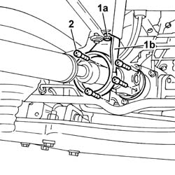
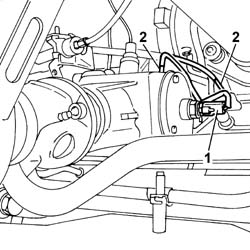
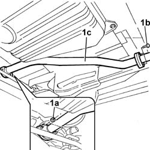
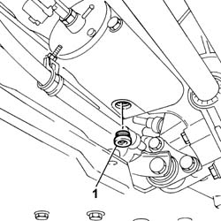
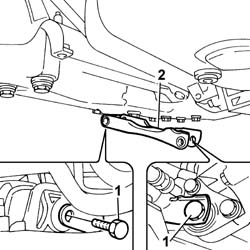
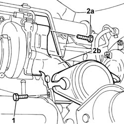
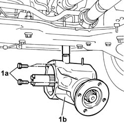
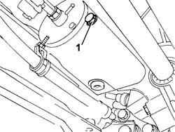

2110E10 TRANSFER CASE FOR REAR TRACTION - R.R.
- Path
- Procedures > 21 GEARBOX UNIT > 2110 MANUAL GEARBOX WITH DIFFERENTIAL > 2110E TRANSFER CASE FOR REAR TRACTION > 2110E10 TRANSFER CASE FOR REAR TRACTION - R.R.
- Kind
- repair procedure (removal / refitting; the operation number is the code)
- Applies to
- engines: 2.0 16V, 2.8 JTD 8V; all production periods
- Interactive page
- https://sloeber94.github.io/elrnDB-fDct/en/#/244001035
Applies to: engines: 2.0 16V, 2.8 JTD 8V; all production periods; only with equipment: 4X4
 Removing
Removing
 Refitting
Refitting- Disconnect the negative battery terminal.
- Position the vehicle on a lift.
- Loosen the greaser for the universal joint securing the front propeller shaft to the rear drive idler unit.
1. Undo the fixing bolts (1a) and move the safety bracket (1b) aside.
2. Loosen the bolts fixing the front propeller shaft universal joint to the rear drive idler unit and move it aside.

Applies to: engines: 2.0 16V, 2.8 JTD 8V; all production periods; only with equipment: 4X4
1. Disconnect the electrical connection.
2. Disconnect vacuum pipes.

Applies to: engines: 2.0 16V, 2.8 JTD 8V; all production periods; only with equipment: 4X4
1. Undo the fixing nuts (1a) and bolts (1b) and remove the front section (1c) of the exhaust pipe.

Applies to: engines: 2.0 16V, 2.8 JTD 8V; all production periods; only with equipment: 4X4
- Position a suitable container for collecting the oil from the rear drive idler casing.
1. Undo the plug and drain the fluid from the rear drive idler casing.

Applies to: engines: 2.0 16V, 2.8 JTD 8V; all production periods; only with equipment: 4X4
1. Undo the retaining bolts.
2. Remove the lower reaction link.

Applies to: engines: 2.0 16V, 2.8 JTD 8V; all production periods; only with equipment: 4X4
1. Undo the bolts fixing the hose joining the turbocharger and the exhaust pipe to the mounting bracket.
2. Undo the fixing bolts (2a) and remove the hose joining the turbocharger and the exhaust pipe (2b).

Applies to: engines: 2.0 16V, 2.8 JTD 8V; all production periods; only with equipment: 4X4
- Undo the speedometer and move it aside.
1. Undo the fixing bolts (1a) and remove the rear drive idler casing (1b).

Applies to: engines: 2.0 16V, 2.8 JTD 8V; all production periods; only with equipment: 4X4
Refitting
Removing- Place the rear drive idler casing in position and tighten the fixing bolts.
- Tighten the speedometer in place.
- Fit the hose connecting the turbocharger and the exhaust pipe in place and tighten the fixing bolts.
- Tighten the bolts fixing the hose joining the turbocharger and the exhaust pipe to the mounting bracket.
- Fit the reaction rod in position and tighten the fixing bolts.
1. Undo the plug and top up the fluid in the rear drive idler casing.

Applies to: engines: 2.0 16V, 2.8 JTD 8V; all production periods; only with equipment: 4X4
- Fit the front section of the exhaust pipe in position and tighten the fixing bolts to the flanges.
- Connect the electrical connection and the vacuum pipes to the rear drive ilder casing.
- Fit the front propeller shaft in position and tighten the bolts fixing the universal joint to the rear drive idler unit flange.
- Fit the front propeller shaft safety bracket in place and tighten the fixing bolts.
- Tighten the greaser for the universal joint securing the front propeller shaft to the rear drive idler unit.
- Connect the negative battery terminal.
- Remove the vehicle from the lift.